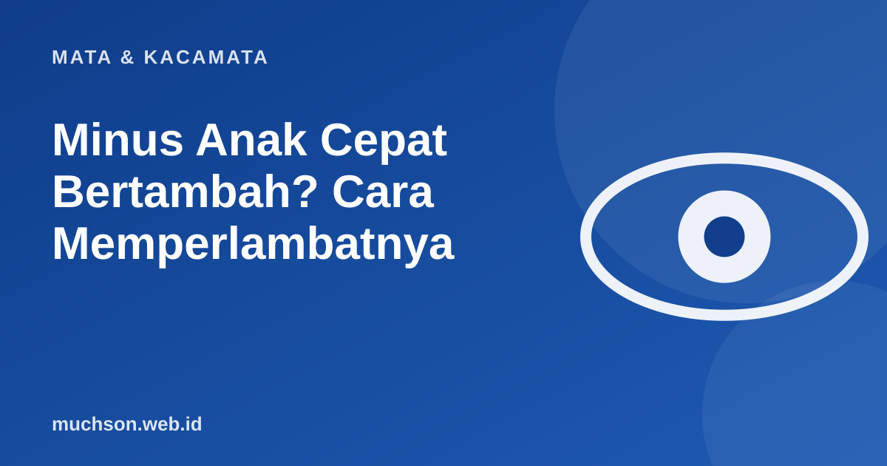

Beranda › Artikel › Mata & Kacamata
Mata & KacamataMinus Anak Cepat Bertambah? Cara Memperlambatnya
Banyak orang tua heran: baru ganti kacamata beberapa bulan lalu, minusnya sudah naik lagi. Pada anak, ini umum, karena bola matanya masih bertumbuh. Yang bisa dilakukan bukan menghentikannya dengan trik, melainkan mengelola faktor yang terbukti berpengaruh.

Mengapa minus anak mudah naik?
Miopia pada anak terutama terjadi karena bola mata bertumbuh terlalu panjang. Selama masa pertumbuhan, panjang bola mata terus berubah, sehingga ukuran lensa yang tepat pun ikut bergeser. Minus umumnya bisa bertambah sampai usia remaja akhir atau awal dua puluhan. Faktor risiko yang dikenal: orang tua yang juga miopia, serta gaya hidup dengan banyak aktivitas jarak dekat dan sedikit waktu di luar ruangan.
Yang punya dukungan bukti paling kuat: waktu di luar ruangan
Penelitian pada anak-anak menunjukkan bahwa lebih banyak waktu di luar ruangan berkaitan dengan risiko miopia yang lebih rendah. Ringkasan penelitian yang beredar menyebut kisaran sekitar 90 sampai 120 menit per hari di luar ruangan, dan WHO juga menganjurkan anak tidak terlalu banyak berada di dalam ruangan serta beristirahat berkala dari pekerjaan jarak dekat. Hubungan antara waktu layar dan miopia sendiri masih rumit dan dipengaruhi banyak faktor lain, jadi jangan menyederhanakannya menjadi "layar pasti penyebabnya".
Kebiasaan yang membantu
- Jeda rutin saat membaca atau menggunakan gawai: sekitar 20 menit lalu lihat jauh.
- Jarak baca yang cukup, sekitar 30 cm atau lebih, dengan cahaya yang baik.
- Kegiatan di luar ruangan setiap hari.
- Tidur cukup.
- Pemeriksaan mata rutin, minimal setahun sekali, atau lebih sering bila minus cepat naik.
Ada penanganan medis untuk memperlambat miopia anak, misalnya tetes mata dosis rendah atau lensa dengan desain khusus. Semua itu perlu penilaian dan pengawasan dokter mata. Jangan memulainya sendiri.
Tanda anak perlu segera diperiksa
Bagaimana dengan kacamata anak?
Kacamata anak perlu bahan yang lentur, ringan, dan nyaman dipakai seharian. Ukuran frame dan jarak lensa harus tepat supaya lensa benar-benar berada di depan mata. Jangan menunda kacamata dengan harapan minus tidak naik: penglihatan yang buram justru menghambat belajar.